**Part 2: Single View to 3D**
Previous |
Home |
Next
**Goals:** Exploring the types of loss and decoder functions for regressing to voxels, point clouds, and mesh representation from single view RGB input.
# Exploring loss functions
## Fitting a voxel grid
The loss function used for regressing RGB input to voxel grid is [binary cross entropy loss](https://pytorch.org/docs/stable/generated/torch.nn.functional.binary_cross_entropy.html).
The animation below shows the regressed voxel grid against the ground truth voxel grid using the binary cross entropy loss.
Optimized Voxel Grid | Ground Truth Voxel Grid
:---:|:---:
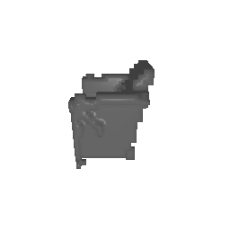 |
## Fitting a point cloud
The loss function used for regressing RGB input to a point cloud is chamfer loss.
The animation below shows the regressed point cloud against the ground truth point cloud using the chamfer loss.
Optimized Point Cloud | Ground Truth Point Cloud
:---:|:---:
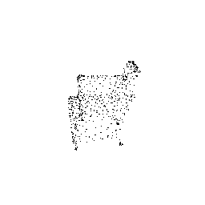 | 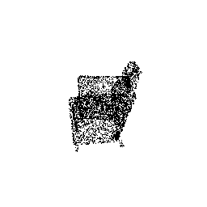
## Fitting a mesh
The loss function used for regressing RGB input to a mesh is [laplacian smoothing loss](https://pytorch3d.readthedocs.io/en/latest/_modules/pytorch3d/loss/mesh_laplacian_smoothing.html).
The animation below shows the regressed mesh against the ground truth mesh using the laplacian smoothing loss.
Optimized Mesh | Ground Truth Mesh
:---:|:---:
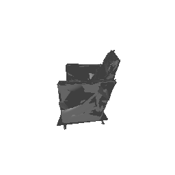 | 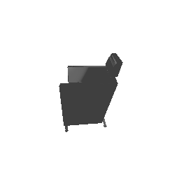
# This section invovles training a single view to 3D pipeline for voxels, point clouds, and meshes.
To encode the image into a latent feature vector, a pretrained ResNet18 encoder was used. The option for loading pretrained ResNet18 features was set to False.
The architecture of the decoder, which takes in as input the latent feature vector, is contingent on the type of 3D representation.
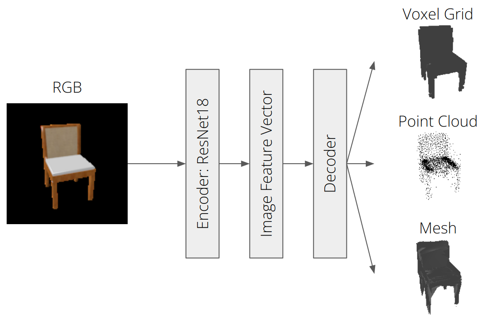
## Image to voxel grid
A neural network to decode binary voxel grids was defined. The decoder was insipred by [Pix2Vox](https://arxiv.org/abs/1901.11153).
The batch size was set to 16, and the learning rate was set to 4e-4 scheduled to decrease by a factor of 0.1 every 5000 iterations. The model was trained for 10000 iterations.
The figures below depict sample inference results on test RGB images that were not used for training.
Input RGB | Predicted 3D Voxel Grid | Ground Truth Mesh
:---:|:---:|:---:
| 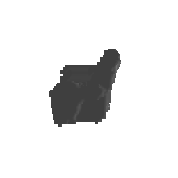 |
| 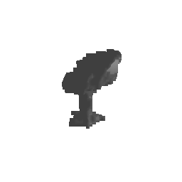 |
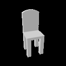 | 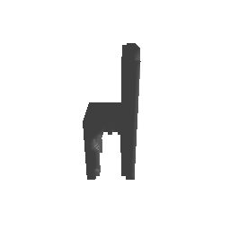 |
## Image to point cloud
A neural network to decode point clouds was defined. The decoder was composed of 6 fully connected layers with ReLU activation functions except for the last layer which had a tanh activation function.
The batch was set to 16 and the learning rate was set to 4e-4 without any learning rate scheduling. The model was trained for 2000 iterations.
The figures below depict sample inference results on test RGB images that were not used for training.
Input RGB | Predicted 3D Point Cloud | Ground Truth Mesh
:---:|:---:|:---:
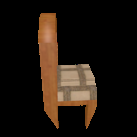 | 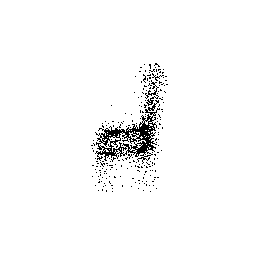 | 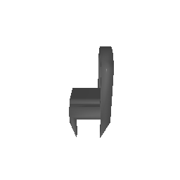
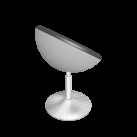 | 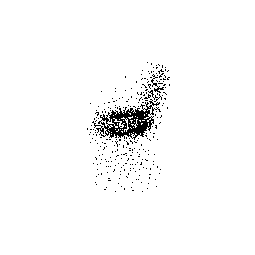 |
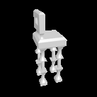 | 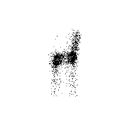 | 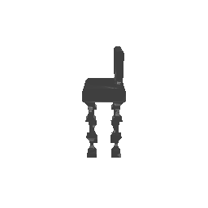
## Image to mesh
A neural network to decode meshes was defined. The decoder was composed of 6 fully connected layers with ReLU activation functions except for the last layer which had a tanh activation function.
The batch size was set to 16, and the learning rate was set to 4e-4 scheduled to decrease by a factor of 0.1 every 4000 iterations. The model was trained for 10000 iterations.
The figures below depict sample inference results on test RGB images that were not used for training.
Input RGB | Predicted 3D Mesh | Ground Truth Mesh
:---:|:---:|:---:
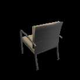 | 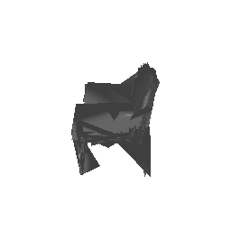 | 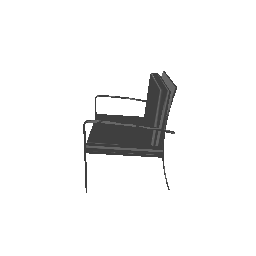
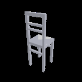 | 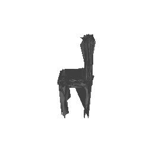 |
| 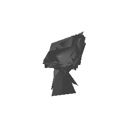 | 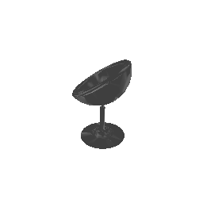
## Quantitative comparisions
The F1-score at a distance threshold of 0.05 is reported in the table below.
Decoder Type | F1-score @ 0.05
:---:|:---:
Voxel Grid | 88.411
Point Cloud | 93.475
Mesh | 95.013
The voxel grid representation is a 3D grid of small cubes called voxels.
As a result, voxel grid have limited resolution, which can make it challenging to acurately capture fine details of complex 3D shapes with fine deatils and smooth surfaces.
This could explain the slightly lower F1-score reported for the voxel grid compared to the point cloud and mesh.
The point cloud representation is a collection of 3D points that define the surface of the object.
Point clouds can represent fine details and complex shapes, which could explain the higher F1-score reported for el grids.
The mesh representation is a collection of connected polygons that define the surface of the object.
Meshes can express fine details, complex shapes, and smooth surfaces, which could explain the highest F1-score reported for the mesh.
However, meshes can also have some limitations, such as a large number of polygons and difficulty in handling non-manifold geometry, which can make it challenging to accurately represent certain types of shapes.
The F1-score curve at different distance thresholds is depicted below.
Voxel Grid | Point Cloud | Mesh
:---:|:---:|:---:
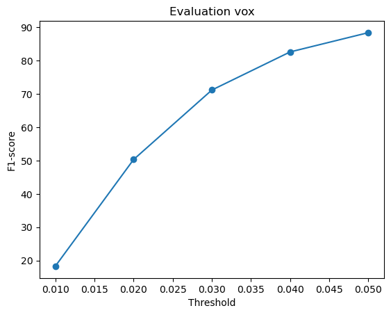 | 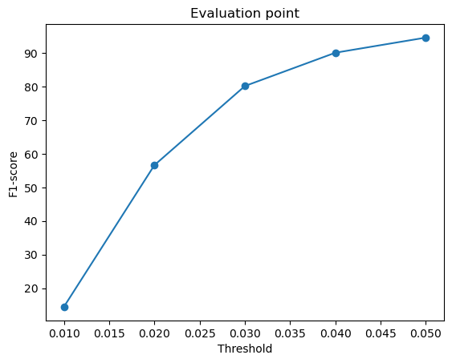 | 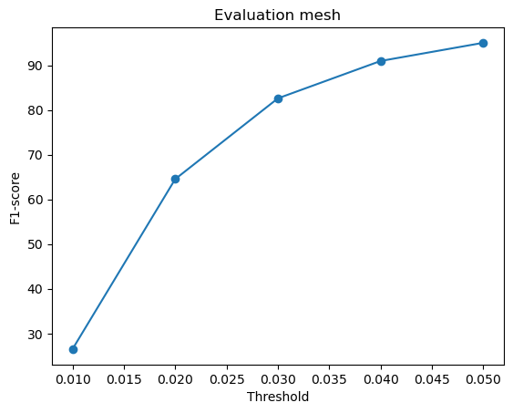
## Analyse effects of hyperparms variations
The hyperparmeter varied was the number of points for the RGB to point cloud decoder.
Instead of the default 5000 points, the number of points was reduced to 1000. All other parameters were kept the same and trained for the same duration of 2000 iterations.
The figures below depict sample inference results on test RGB images that were not used for training.
The resulting F1-score @ 0.05 for 1000 points was 87.967, which was lower than the default 5000 points (93.475).
On the contrary, the visual results were better for 1000 points than 5000 points, which could be explained by the fact that the F1-score is a measure of the accuracy of the predicted point cloud, while the visual results are a measure of the quality of the predicted point cloud.
The accuracy for 5000 points may be higher because of the dense regions where there is probabilisticaly higher chance of having a surface.
The quality for 1000 points may look better as it attempts to distribute limited number of points more evenly across the surface.
Input RGB | Predicted 3D Point Cloud (1000 points) | Predicted 3D Point Cloud (5000 points) | Ground Truth Mesh
:---:|:---:|:---:|:---:
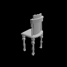 | 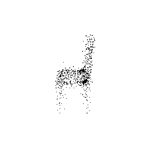 | 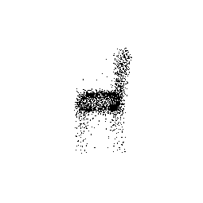 | 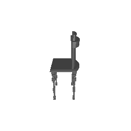
| 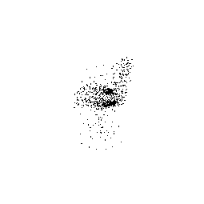 | |
| 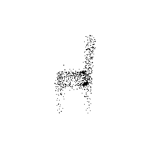 | 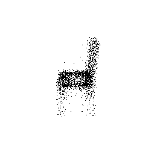 |  ## Interpret your model
As a final step, we will try to interpret the model by visualizing the optimization process.
This is done by inferencing the model on a single image throughout the training duration.
The figures below show the animated visualization of the optimization process for the RGB2pointcloud, RGB2mesh, and RGB2voxelgrid decoders.
RGB2pointcloud | RGB2mesh | RGB2voxelgrid
:---:|:---:|:---:
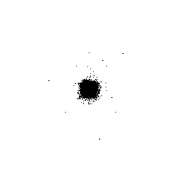 | 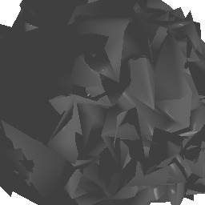 | 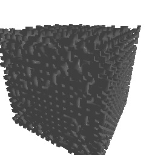
## Interpret your model
As a final step, we will try to interpret the model by visualizing the optimization process.
This is done by inferencing the model on a single image throughout the training duration.
The figures below show the animated visualization of the optimization process for the RGB2pointcloud, RGB2mesh, and RGB2voxelgrid decoders.
RGB2pointcloud | RGB2mesh | RGB2voxelgrid
:---:|:---:|:---:
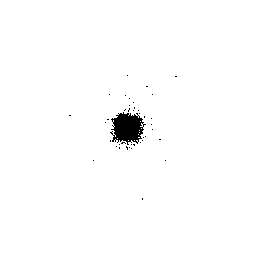 | 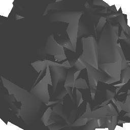 | 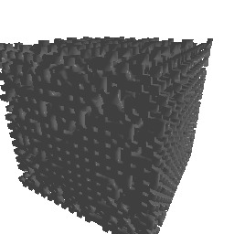